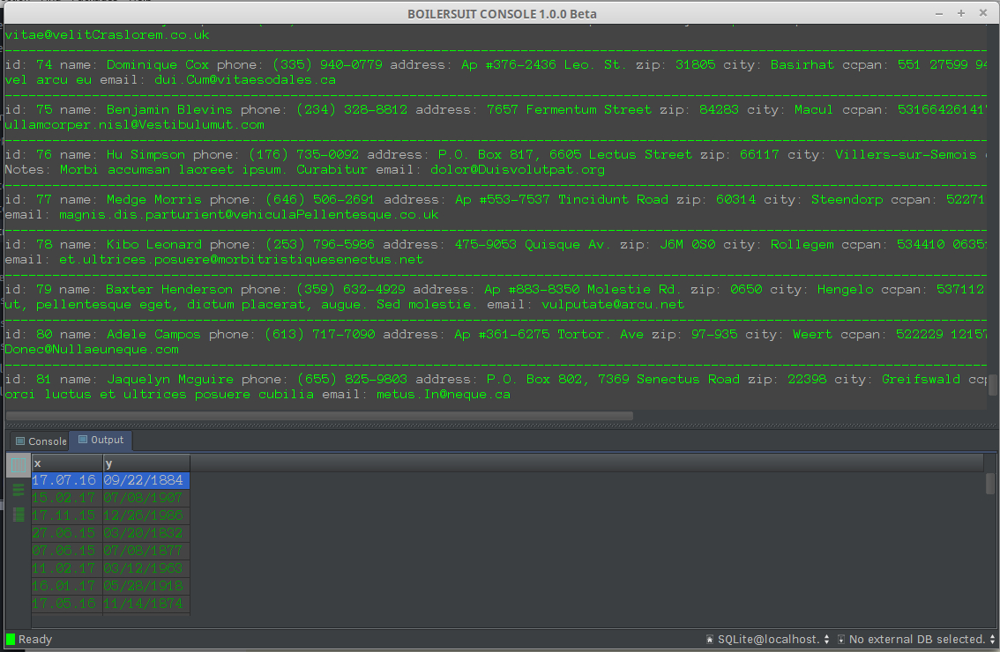

What is Boilersuit
Boilersuit Light is a front-end application to extract, prepare, transform and analysestructured data. There is no need to set up a database connection to start working - Boilersuit automatically creates a local SQLite database file. This works astonishingly well with data up to a couple of gigabytes (in theory almost unlimited).

Boilerspeech and SQL short-hand notation
Transformation logic is defined in a special script language which is a superset of SQL. That means you can use native SQL if you like:
CREATE TABLE germanclients AS SELECT id, name, location FROM clients WHERE location='Germany' ORDER BY name ASC;
The shorthand BS like notation would be
germanclients := clients(id, name{ASC}, location{='Germany'});
More handy short notations can be found here. Apart from the handy short notations for frequently used SQL queries
Pre-Processing Functions
As an additional feature, BS provides pre-processing functions for attributes, e.g. to 'suck' out parts of an attribute based on regular expressions, or to conveniently format numbers and dates, and others like so:
germanclients2 := germanclients(id, SUCK(name, [A-Za-z]+, 1) AS firstname, SUCK(name, [A-Za-z]+, 1) AS lastname);
More on this here.
Boilerspeech
Short Notation
SELECT
Transformation logic is defined in a special script language which is a superset of SQL. That means you can use native SQL if you like:
CREATE TABLE germanclients AS SELECT id, name, location FROM clients WHERE location='Germany' ORDER BY name ASC;
The shorthand BS like notation would be
germanclients := clients(id, name{ASC}, location{='Germany'});
COUNT
#table;
#mytable(attr1 like 'some value');
#cars(serialnumber = 12345);
LEFT OUTER JOIN
-- SELECT * FROM ourcompanies oc LEFT OUTER JOIN companylist cl ON oc.name = cl.name
exactmatch := ourcompanies(name)->companylist(name);
FREQUENCY TABLES
Often we have a code, or an id, in two tables and we would like to count how often they occur in any of both tables (if at all), and also see which keys exist only in the one but not in the other, and vice versa.
exactmatch := ourcompanies(name)->companylist(name);
CREATE / DROP TABLES
Creating/Dropping a table in Boilersuit is as simple as typing
+mytable(*id, attribute1, attribute2); -- create
-mytable; -- drop
Preprocessing Functions
A range of preprocessing functions are available:| Function | Purpose |
|---|---|
| bsfMagicDate | Tries to recognize a date expression from various formats into the BS default format MM.dd.yyyy.
Works even if the formats in the source data vary from row
to row. For unrecognized expressions, a warning will be shown.
-- checking against common formats
transformed := source(, magicDate(MYDATE) AS STANDARDIZED_MY_DATE);
If a preferred set of allowed formats should be used, they can be added as arguments:
-- checking against y-m-d and y.m.d:
transformed := source(, magicDate(MYDATE, y-m-d, y.m.d[,...]) AS STANDARDIZED_MY_DATE);
|
| bsfFormatNumber | Constructs a string using a pre-existing number in a certain way often useful to construct artificial IDs
for things. Lets assume we have a table with id's
id ----- 1 239 4000Then, we may want to construct id's of uniform length like so: result := table(id, formatNumber(id, A-DDDD) AS NEW_ID); -- Result will be as follows: id NEW_ID ---- ----------- 1 A-0001 239 A-0239 4000 A-4000 |
| bsfSuck | "Sucks" out specific patterns from the source data based on a regular expression |
| bsfHash | Hashes the source data using the String.hashCode method (probably depends on JVM used to run BS). If the hash value is > 0, an 'X' is added to the hash as a prefix, otherwise and 'Y' - this explains the Xxxxxx resp. Yxxxxx format of the hash result. |
How to get it
Boilersuit comes in 3 pieces:| Component | What is it | Get it |
|---|---|---|
| boilersuit-core | This is the engine behind BS containing what you need to connect to databases, interpretation logic needed to run scripts etc. It is a pre-requisite of any Boilersuit application and it's a java library. | Open Source, at GitHub |
| boilersuit-light | The free version of BoilerSuit consisting of a simple command-line like interface to manipulate and view data, to play around with it all and to run your BS scripts. It contains the boiler-suit core library and won't run without it | Open Source, at GitHub |
| boilersuit-professional | The professional version of Boilersuit contains special features targeted at various business needs such as data migration, reconciliation, predicitve modelling. | Contact us |